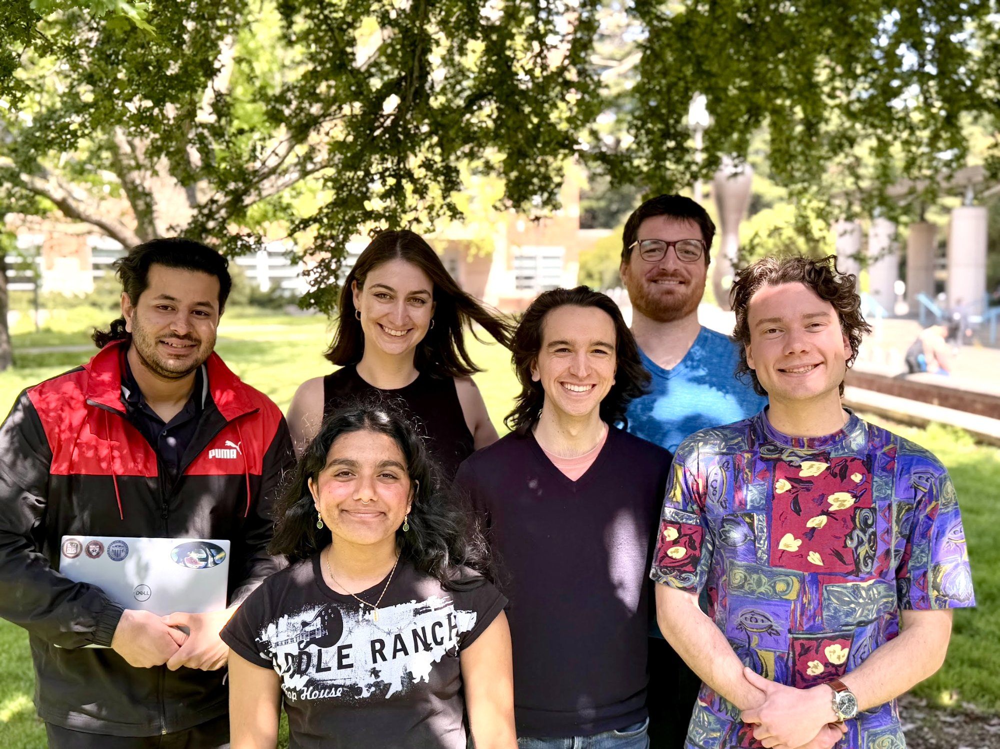
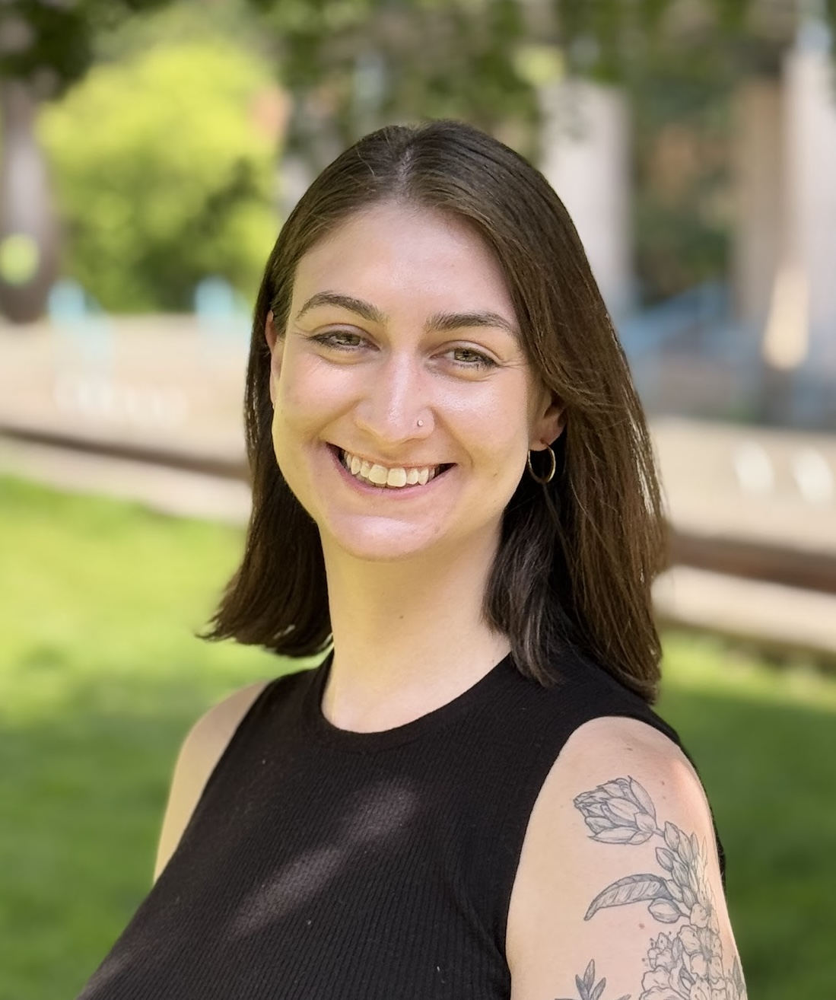

My research asks: what is dark matter, and how does it govern the evolution and assembly of galaxies? I use the Milky Way as a dark matter laboratory, connecting observations from large surveys to cosmological and idealized simulations through stellar streams, the tidal debris of disrupting satellites and star clusters, to measure the distribution and particle properties of dark matter.
Undergraduates: If you are a UW undergrad interested in research, please reach out to Nora Shipp with a summary of your interests and why you are excited to join the group.
Graduate students: Information about the UW Astronomy PhD program can be found on the department webpage. Current UW graduate students are welcome to reach out to discuss research opportunities.
Postdocs: If you are interested in the DiRAC Institute Fellowship or in bringing a national fellowship (e.g., Hubble, NSF AAPF) to UW to work on near-field cosmology, please reach out to Nora Shipp.